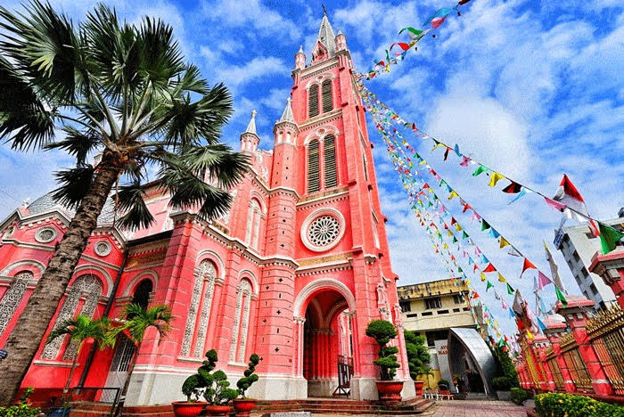
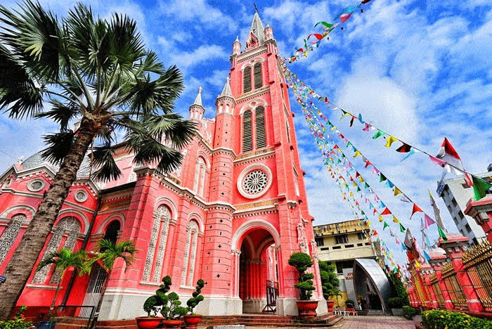
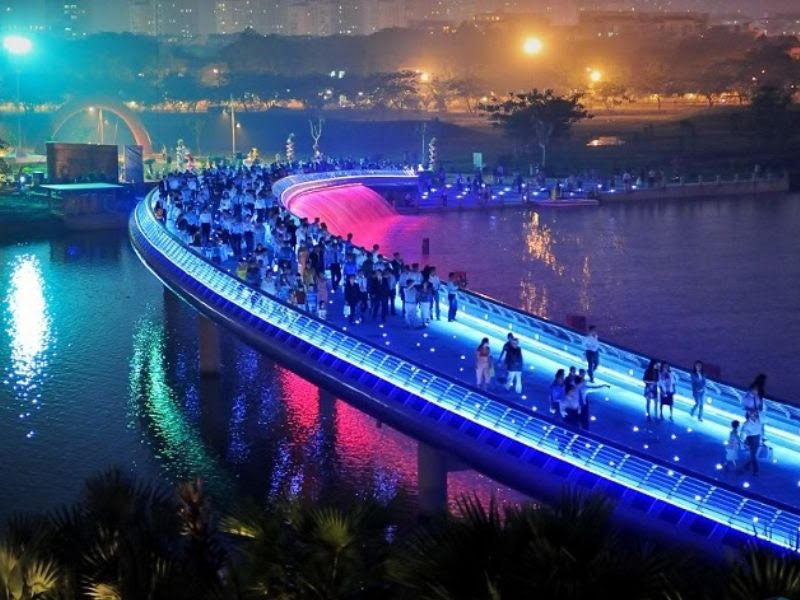
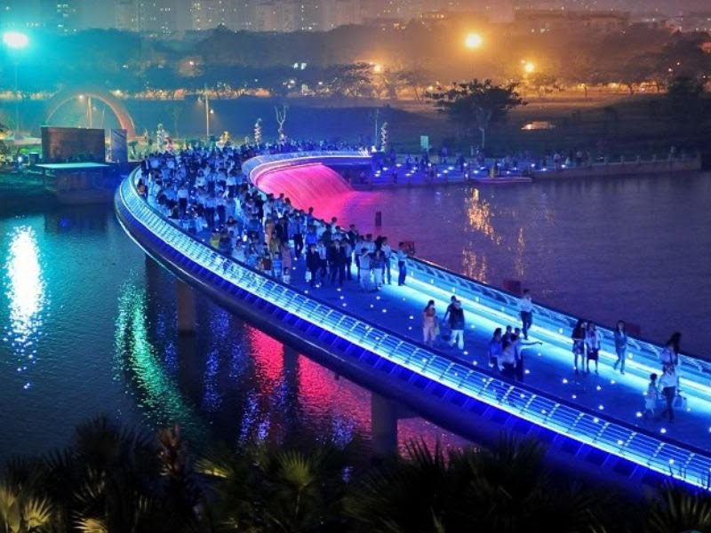
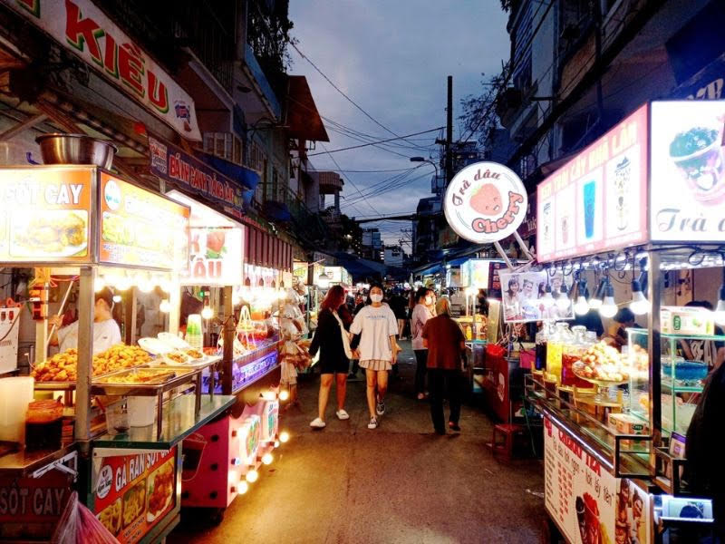
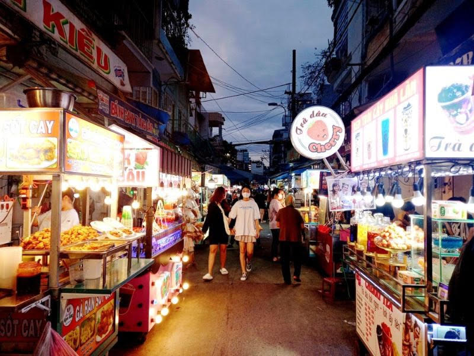

General
Saigon ist eine Stadt in Süd-Vietnam, bekannt für ihre zentrale Rolle im Vietnamkrieg. Sie ist auch bekannt für ihre Wahrzeichen aus der französischen Kolonialzeit, wie die Notre-Dame-Basilika, die ausschließlich aus von Frankreich importierten Materialien besteht, und das Hauptpostamt aus dem 19. Jahrhundert. Essensstände stehen in den Straßen der Stadt, besonders um den geschäftigen Bến Thành-Markt. Bevölkerung: 8,993 Millionen (4. Jan. 2019) Bevölkerungsdichte: 4.293 Einwohner je km² Ortszeit: Mittwoch, 13:58 Fläche: 2.095 km²
Geschichte von Saigon
Dieses Gebiet wurde ursprünglich Prey Nokor genannt, und die Stadt entstand später durch die südliche Expansion der Nguyễn-Dynastie. Im Jahr 1698 gründete Nguyễn Hữu Cảnh die Stadt Gia Định, was die Geburt der Stadt markierte. Als die Franzosen in Indochina ankamen, um ihre Kolonialinteressen zu verfolgen, wurde die Stadt Saigon gegründet und wuchs rasch zu einer der wichtigsten Städte in Vietnam heran. Zusammen mit Phnom Penh in Kambodscha wurde Saigon von den Franzosen als "Juwel von Fernost" in ihren Kolonien bezeichnet. Saigon diente auch als Hauptstadt der Föderation von Französisch-Indochina von 1887 bis 1901, bevor die Franzosen die Hauptstadt nach Hanoi verlegten. Im Jahr 1949 wurde Saigon zur Hauptstadt der Unabhängigen Staat Vietnam, einer französischen Kolonie und später der Hauptstadt der Republik Vietnam. Seitdem hat die Stadt eine wichtige Rolle im Süden Vietnams gespielt. Nach dem Zusammenbruch der Republik Vietnam am 30. April 1975 wurde das gesamte vietnamesische Gebiet vollständig wiedervereinigt. Am 2. Juli 1976 beschloss die Nationalversammlung Vietnams, den Namen Saigon in "Thành phố Hồ Chí Minh (TP HCM)" zu ändern.
 

 

Sehenswürdigkeiten
Saigon, das pulsierende Herz Südvietnams, ist reich an Sehenswürdigkeiten, die von kolonialer Architektur bis zu zeitgenössischen Hochhäusern reichen. Historische Tempel und Märkte existieren neben modernen Einkaufszentren und bieten einen Einblick in die vielschichtige Kultur und Geschichte der Stadt. Die Besucher werden von der Energie Saigons angezogen, die sich in seinen farbenfrohen Straßen, den friedvollen Parks und den lebendigen Wasserwegen widerspiegelt, die zusammen ein unvergessliches urbanes Erlebnis schaffen.


Essen
Street Food in Saigon ist ein lebendiges Kaleidoskop der Aromen, das die Essenz der vietnamesischen Küche einfängt. An jeder Straßenecke finden sich Garküchen und mobile Stände, die eine Vielzahl an Gerichten anbieten: von der berühmten Pho, einer herzhaften Nudelsuppe, über frisch gerollte Sommerrollen bis hin zu knusprigen Banh Mi Sandwiches. Jedes Gericht ist eine Geschmacksexplosion, die von süß über sauer bis hin zu scharf und umami reicht. Für Einheimische wie Besucher ist das Erkunden der Street Food Szene in Saigon ein unvergessliches Erlebnis – eine Reise durch die Vielfalt und den Reichtum der lokalen Gastronomie, serviert auf dem lebhaften Tableau der Straßen dieser dynamischen Stadt.
 

Nachtleben
Saigon ist eine Stadt, die niemals schläft. Tagsüber ein geschäftiges Zentrum, verwandelt es sich nachts in ein leuchtendes Paradies für alle, die Spaß und Unterhaltung suchen. In der Dunkelheit leuchten Bars und romantische Cafés auf und laden Besucher ein, die Vielfalt von Saigons Nachtleben zu erkunden. Ob ein Bummel durch den Nachtmarkt, ein Spaziergang durch die lebendigen Straßen, das Entspannen in einem Park oder das Genießen von Street Food – Saigon bietet eine Welt voller Energie und Romantik, wenn die Sonne untergeht. Lassen Sie sich von der nächtlichen Stimmung mitreißen und entdecken Sie die Hotspots, die Ihre Reise unvergesslich machen.